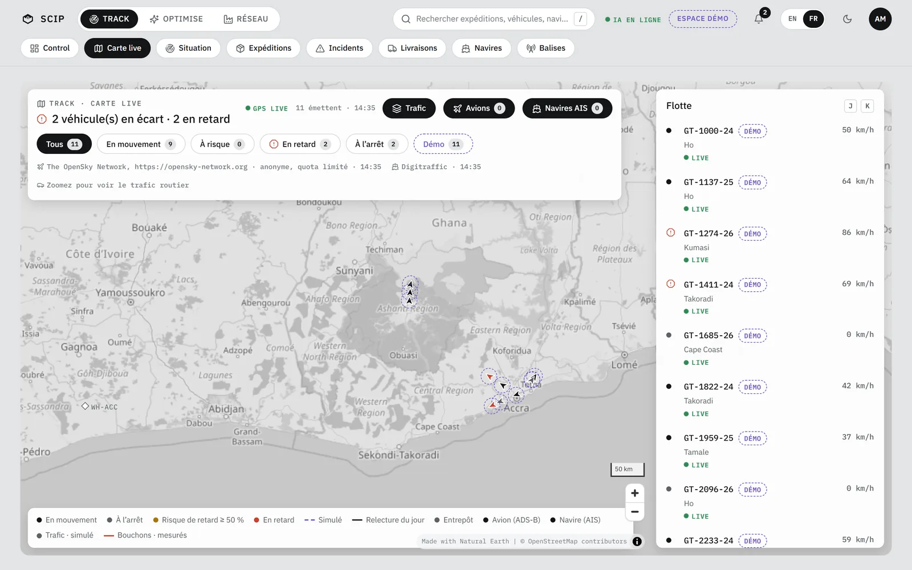
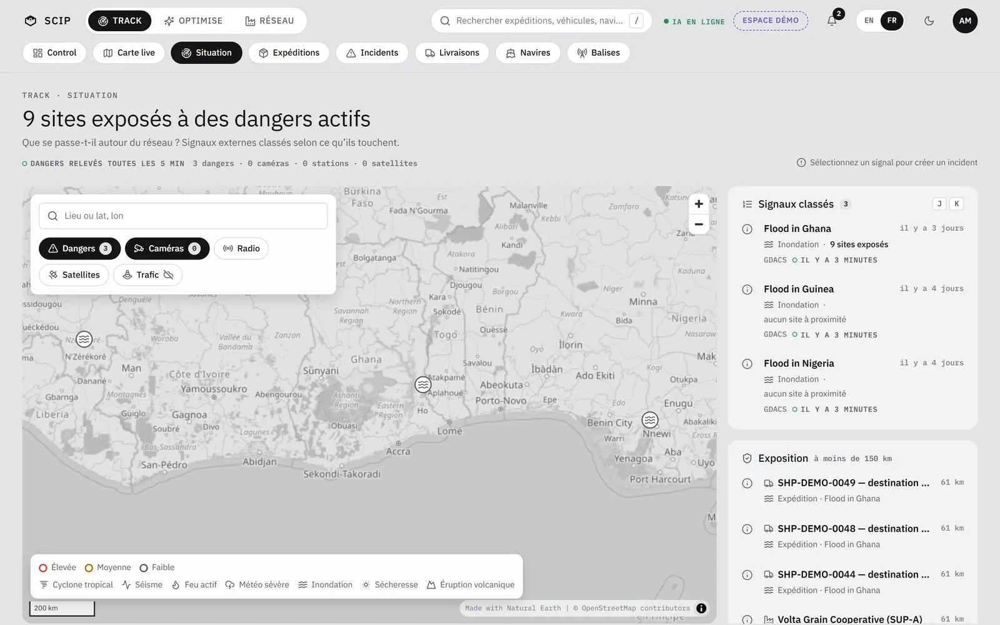
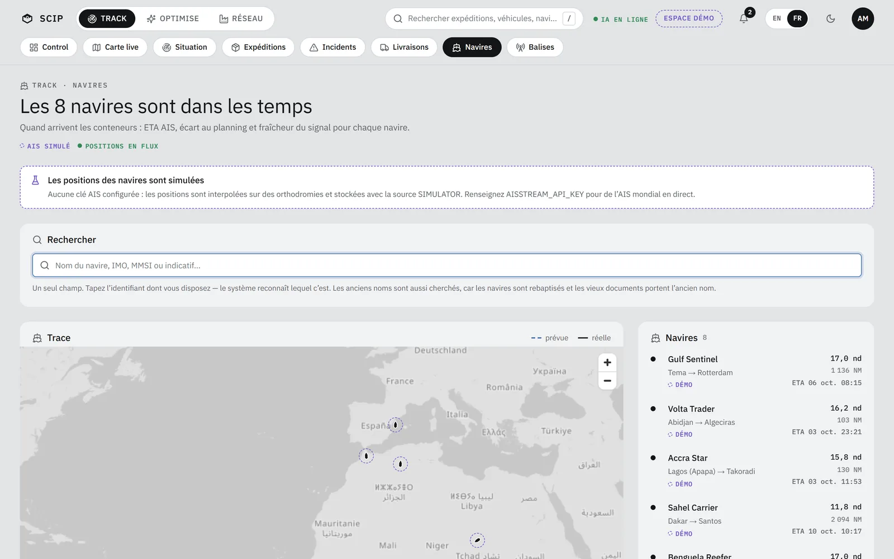
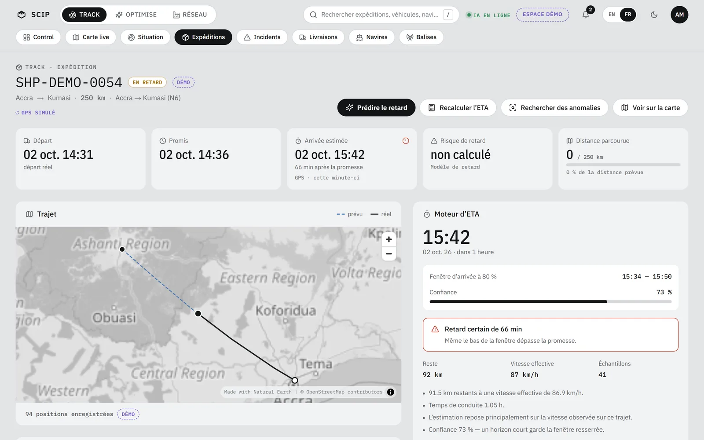

Balise GT06
Les traceurs GT06 et Concox parlent à SCIP en TCP, port 5023. À activer dans Réglages, Réseau local.
Track
Track suit la marchandise du portail du fournisseur au quai du client, et signale chaque retard dès qu’il se dessine.

Balises · Drive
Quand une balise se tait, la carte affiche « Position estimée » avec son cercle d’incertitude : « Estimée ±N km ».
Les traceurs GT06 et Concox parlent à SCIP en TCP, port 5023. À activer dans Réglages, Réseau local.
La page /drive enregistre livraisons, signatures et photos hors connexion, puis synchronise. L’envoi de la position attend le HTTPS local, pas encore livré, et s’arrête dès que l’écran du téléphone s’éteint.
Les camions du jeu de démo sont simulés et marqués. Le trafic autour l’est aussi, sur les vraies routes.
Carte live · Navires · Situation
Chaque couche marche sans clé. Une clé gratuite, saisie dans Réglages, Sources de données, élargit la couverture.


Hors ligne
Un fond de carte mondial de 4 Mo vit dans le logiciel : côtes, frontières, fleuves, lacs, villes. Sans réseau, les six cartes restent lisibles, sans le détail rue par rue.
Expéditions · Livraisons · Incidents
L’ETA est recalculée toutes les 30 secondes, avec sa fenêtre d’arrivée et sa confiance.

L’expédition passe « en retard », une alerte part, Optimise recalcule.
Enregistrées sur le téléphone du chauffeur, même sans réseau, puis jointes à la livraison.
Un incident se crée depuis un signal de Situation. Un retard seul n’en crée pas.